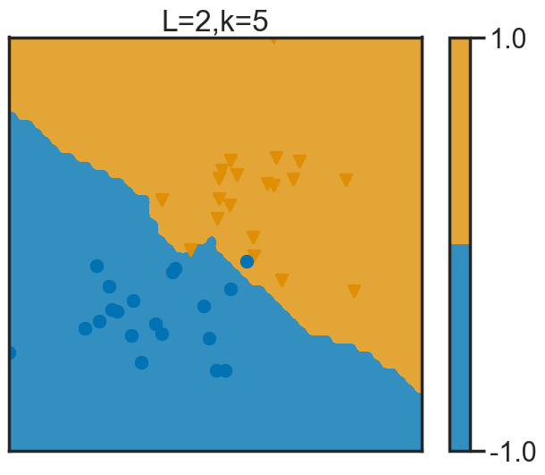
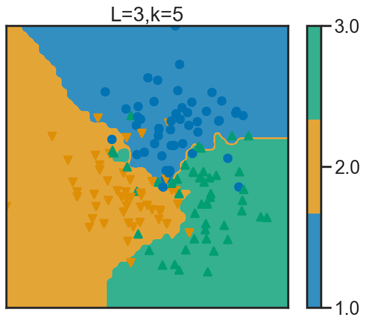
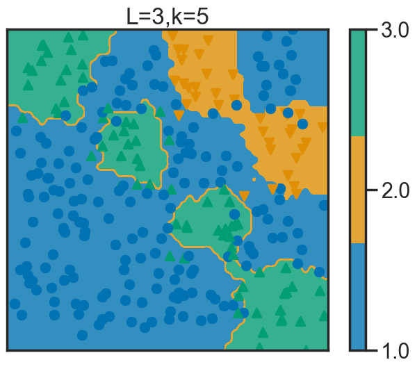
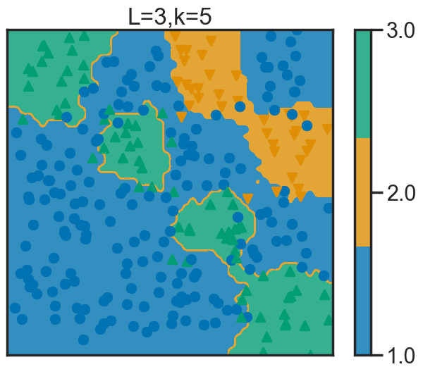
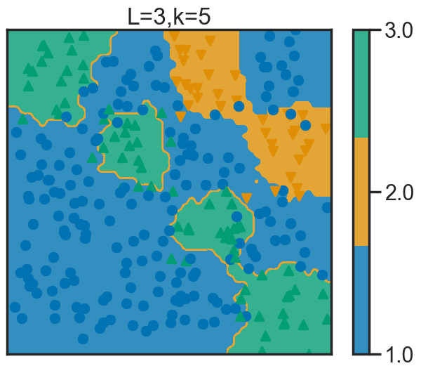

rand_gauss : La fonction rand_gauss génère des points échantillonnés à partir d’une variable gaussienne de taille 2 centrée réduite. Elle prend en paramètres le nombre d’échantillons \(n=100\), la moyenne \(\mu=[1,1]\) et l’écart-type \(\sigma=[\sqrt{0.1},\sqrt{0.1}]\). Elle retourne un tableau avec la variable gaussienne de moyenne \(\mu=[1,1]\) et d’écart-type \(\sigma=[\sqrt{0.1},\sqrt{0.1}]\).
rand_bi_gauss : La fonction rand_bi_gauss génère grâce à rand_gauss deux variables gaussiennes d’échantillons \(n_1=100\) et \(n_2=100\), de moyennes et d’écart-types respectifs : \(\mu_1=[1,1], \, \mu_2=[-1,-1]\), \(\sigma_1=[0.1,0.1]=\sigma_2\). Elle crée le vecteur \(y\) des réponses en empilant \(n_1\)\(1\) puis \(n_2\)\(-1\). Elle combine aussi les échantillons dans \(X\). Et ensuite elle permute aléatoirement les indices et renvoie les échantillons et les réponses.
rand_tri_gauss : La fonction rand_tri_gauss utilise la fonction rand_gausscomme précédemment pour générer les échantillons de chaque distribution. Les échantillons générés sont ensuite empilés verticalement dans la matrice X, et les réponses correspondantes sont stockées dans le vecteur y. Ensuite les indices des échantillons sont permutés de manière aléatoire, et les échantillons et les réponses sont réorganisés en fonction de ces indices avant d’être renvoyés.
rand_clown: La fonction rand_clown commence par générer des échantillons aléatoires à partir d’une distribution gaussienne en utilisant np.random.randn. Les échantillons générés sont stockés dans x0, x1 et x2. Ensuite, la fonction ajoute du bruit aux échantillons du premier groupe de données en multipliant x0 par lui-même et en ajoutant le bruit généré par np.random.randn(n1, 1). Le résultat est stocké dans x1. Pour le deuxième groupe de données, la fonction génère deux ensembles de bruit à l’aide de np.random.randn(n2, 1) et les combine avec sigma2 pour obtenir des valeurs différentes. Ces deux ensembles de bruit sont ensuite concaténés horizontalement à l’aide de np.hstack pour obtenir x2. Enfin, les échantillons des trois groupes sont empilés verticalement en utilisant np.vstack pour obtenir la matrice X. Les réponses sont générées en empilant horizontalement n1 réponses 1 suivies de n2 réponses -1. Les indices des échantillons sont permutés aléatoirement à l’aide de np.random.permutation, et les échantillons et les réponses sont réorganisés en fonction de ces indices avant d’être renvoyés.
rand_checkers: La fonction rand_checkers génère un damier aléatoire : à partir d’une distribution uniforme, on génère un damier dans la partie surpérieure droite du plan. La structure en damier n’est pas flagrante lorsque le nombre de points générés est petit mais elle devient évidente pour 1000 points.
Code
import numpy as npimport matplotlib.pyplot as pltfrom sklearn.base import BaseEstimator, ClassifierMixinfrom sklearn import metricsfrom scipy import stats # to use scipy.stats.modefrom sklearn import neighborsfrom sklearn import datasetsfrom tp_knn_source import (rand_gauss, rand_bi_gauss, rand_tri_gauss, rand_checkers, rand_clown, plot_2d, ErrorCurve, frontiere, LOOCurve)import seaborn as snsfrom matplotlib import rcplt.close('all')rc('font', **{'family': 'sans-serif', 'sans-serif': ['Computer Modern Roman']})params = {'axes.labelsize': 12,'font.size': 16,'legend.fontsize': 16,'text.usetex': False,'figure.figsize': (8, 6)}plt.rcParams.update(params)sns.set_context("poster")sns.set_palette("colorblind")sns.set_style("white")
La méthode que l’on pourrait utiliser est la suivante : on pourrait faire la moyenne des k plus proches voisins pour obtenir une valeur approchée de notre point, bien que nous ne pourrions pas tomber sur la valeur exacte. Ce n’est pas aussi ‘simple’ qu’avec des classes de nombres entiers.
Approche formelle
Question 2
Code
class KNNClassifier(BaseEstimator, ClassifierMixin):"""Home made KNN Classifier class."""def__init__(self, n_neighbors=1):self.n_neighbors = n_neighborsdef fit(self, X, y):self.X_ = Xself.y_ = yreturnself# sauvegarde les données d'entrainementdef predict(self, X): dist = np.sum((X[:, np.newaxis, :]-self.X_[np.newaxis, :, :])**2, axis=-1) idx_sort = np.argsort(dist, axis=1)# on récupère les indices par rapport aux valeurs des distances idx_neighbors = idx_sort[:, :self.n_neighbors] y_neighbors =self.y_[idx_neighbors]# on trouve les labels des voisins mode, _ = stats.mode(y_neighbors, axis=1) y_pred = np.asarray(mode.ravel(), dtype=np.intp)return y_pred
Après avoir compléter le code, nous pouvons vérifier si cette méthode est identique ou non à celle de scikit-learn.
Code
X_train = X2[::2]Y_train = y2[::2].astype(int)X_test = X2[1::2]Y_test = y2[1::2].astype(int)# on utilise la classe KNNClassifier avec 10 voisinsknn = KNNClassifier(n_neighbors=10)knn.fit(X_train, Y_train)y_pred = knn.predict(X_test)# on utilise la classe KNeighborsClassifier avec 10 voisinsknn2 = neighbors.KNeighborsClassifier(n_neighbors=10)knn2.fit(X_train, Y_train)y_pred2 = knn2.predict(X_test)# comparaison des deuxprint(metrics.accuracy_score(Y_test, y_pred))print(metrics.accuracy_score(Y_test, y_pred2))
0.8133333333333334
0.8133333333333334
Les résultats de précisions sont les mêmes pour les deux classes donc elles sont équivalentes.
Question 3
En utilisant la méthode de scikit-learn, nous allons comparer 3 jeux de données, avec la distance euclidienne \(d(x,v)=||x-v||^2\)
Code
n_neighbors =5# the k in k-NNknn = neighbors.KNeighborsClassifier(n_neighbors=n_neighbors)# for data in [data1, data2, data3, data4]:for X, y in [(X1, y1), (X2, y2), (X3, y3), (X4, y4)]: knn.fit(X, y) plt.figure() n_labels = np.unique(y).shape[0] frontiere(knn, X, y, w=None, step=50, alpha_choice=1, n_labels=n_labels, n_neighbors=n_neighbors) plt.draw()
  
Question 4
Code
plt.figure(figsize=(12, 8))plt.subplot(3, 5, 3)plot_2d(X_train, Y_train)plt.xlabel('Samples')ax = plt.gca()ax.get_yaxis().set_ticks([])ax.get_xaxis().set_ticks([])for n_neighbors inrange(1, 11):# TODO : fit the knn knn = neighbors.KNeighborsClassifier(n_neighbors=n_neighbors) knn.fit(X_train, Y_train) plt.subplot(3, 5, 5+ n_neighbors) plt.xlabel('KNN with k=%d'% n_neighbors) n_labels = np.unique(y).shape[0] frontiere(knn, X, y, w=None, step=50, alpha_choice=1, n_labels=n_labels, colorbar=False, samples=False, n_neighbors=n_neighbors)plt.draw() # update plotplt.tight_layout()
Lorsque l’on modifie les valeurs de \(k\) on s’aperçoit d’un changement important. En effet, plus le nombre de voisins est important plus les frontières sont nettes et simples. Lorsque \(k=1\) la frontière est très complexe, en effet le classifieur est sensible au bruit, il ne se base que sur le plus proche et donc n’est pas fiable. Il surapprend. Si le nombre est trop grand, par exemple si \(k=n\), on va utiliser tous les points et donc le classifieur n’apporte aucune information, une seule classe sera donnée pour chaque point (la classe la plus nombreuse).
On remarque que le taux d’erreur sur les données d’apprentissage lorsque \(k=1\) est nul. C’est normal car l’on prend le plus proche voisin du point qui est lui-même donc on trouve la bonne classe. Le taux d’erreur sur les données de test lorsque \(k=1\) est d’environ \(0.19\) ce qui peut être amélioré. En effet lorsqu’on prend juste un voisin pour tester un point il est quand même probable que le plus proche ne soit pas de la même classe. Ce n’est pas assez significatif, il faut prendre plus de voisins.
On peut également utiliser la fonction .score de scikit-learn : 1-knn.score(X_train, Y_train) pour les données d’entrainements. On obtient les mêmes résultats.
C’est plutôt long en temps de calcul car il faut calculer les distances pour chaque point. En grande dimension, les points sont de plus en plus loin et donc ils ne sont plus tellement “voisins”.
Question 8
Code
# The digits datasetdigits = datasets.load_digits()print(type(digits))# plot some images to observe the dataplt.figure()for index, (img, label) inenumerate(list(zip(digits.images, digits.target)) [10:20]): plt.subplot(2, 5, index +1) plt.axis('off') plt.imshow(img, cmap=plt.cm.gray_r, interpolation='None') plt.title('%i'% label)plt.draw()
<class 'sklearn.utils._bunch.Bunch'>
On regarde les images du dataset. Il s’agit d’images de chiffres de 0 à 9 très pixellisés. On applique ensuite la méthode vue précédemment pour classifier ces images.
On obtient une matrice de confusion qui est plutôt bien. La capacité du classifieur à mettre l’image dans la bonne case est assez élevée. On remarque sur la matrice que sur la diagonale c’est assez clair, donc la probabilité est proche de 1 par rapport aux autres cases.
Source Code
---title: "TP1 - knn"title-block-banner: trueformat: html: code-fold: true code-tools: true theme: mintytoc: truetoc-depth: 3toc-title: "Sommaire"author: - name: Anne Bernarddate: 2023-09-14---# Rappels de classification## Généralisation artificielle de données <a name="Généralisation artificielle de données"></a>### Question 1 <a name="Question 1"></a>`rand_gauss` :La fonction `rand_gauss` génère des points échantillonnés à partir d'une variable gaussienne de taille 2 centrée réduite. Elle prend en paramètres le nombre d'échantillons $n=100$, la moyenne $\mu=[1,1]$ et l'écart-type $\sigma=[\sqrt{0.1},\sqrt{0.1}]$. Elle retourne un tableau avec la variable gaussienne de moyenne $\mu=[1,1]$ et d'écart-type $\sigma=[\sqrt{0.1},\sqrt{0.1}]$.`rand_bi_gauss` :La fonction `rand_bi_gauss` génère grâce à `rand_gauss` deux variables gaussiennes d'échantillons $n_1=100$ et $n_2=100$, de moyennes et d'écart-types respectifs : $\mu_1=[1,1], \, \mu_2=[-1,-1]$, $\sigma_1=[0.1,0.1]=\sigma_2$. Elle crée le vecteur $y$ des réponses en empilant $n_1$ $1$ puis $n_2$ $-1$. Elle combine aussi les échantillons dans $X$. Et ensuite elle permute aléatoirement les indices et renvoie les échantillons et les réponses. `rand_tri_gauss` : La fonction `rand_tri_gauss` utilise la fonction `rand_gauss`comme précédemment pour générer les échantillons de chaque distribution. Les échantillons générés sont ensuite empilés verticalement dans la matrice X, et les réponses correspondantes sont stockées dans le vecteur y. Ensuite les indices des échantillons sont permutés de manière aléatoire, et les échantillons et les réponses sont réorganisés en fonction de ces indices avant d'être renvoyés.`rand_clown`: La fonction `rand_clown` commence par générer des échantillons aléatoires à partir d'une distribution gaussienne en utilisant `np.random.randn`. Les échantillons générés sont stockés dans x0, x1 et x2.Ensuite, la fonction ajoute du bruit aux échantillons du premier groupe de données en multipliant x0 par lui-même et en ajoutant le bruit généré par np.random.randn(n1, 1). Le résultat est stocké dans x1.Pour le deuxième groupe de données, la fonction génère deux ensembles de bruit à l'aide de np.random.randn(n2, 1) et les combine avec sigma2 pour obtenir des valeurs différentes. Ces deux ensembles de bruit sont ensuite concaténés horizontalement à l'aide de np.hstack pour obtenir x2.Enfin, les échantillons des trois groupes sont empilés verticalement en utilisant np.vstack pour obtenir la matrice X. Les réponses sont générées en empilant horizontalement n1 réponses 1 suivies de n2 réponses -1. Les indices des échantillons sont permutés aléatoirement à l'aide de `np.random.permutation`, et les échantillons et les réponses sont réorganisés en fonction de ces indices avant d'être renvoyés.`rand_checkers`: La fonction rand_checkers génère un damier aléatoire : à partir d’une distribution uniforme, on génère un damier dans la partie surpérieure droite du plan. La structure en damier n’est pas flagrante lorsque le nombre de points générés est petit mais elle devient évidente pour 1000 points.```{python}#| input: false import numpy as npimport matplotlib.pyplot as pltfrom sklearn.base import BaseEstimator, ClassifierMixinfrom sklearn import metricsfrom scipy import stats # to use scipy.stats.modefrom sklearn import neighborsfrom sklearn import datasetsfrom tp_knn_source import (rand_gauss, rand_bi_gauss, rand_tri_gauss, rand_checkers, rand_clown, plot_2d, ErrorCurve, frontiere, LOOCurve)import seaborn as snsfrom matplotlib import rcplt.close('all')rc('font', **{'family': 'sans-serif', 'sans-serif': ['Computer Modern Roman']})params = {'axes.labelsize': 12,'font.size': 16,'legend.fontsize': 16,'text.usetex': False,'figure.figsize': (8, 6)}plt.rcParams.update(params)sns.set_context("poster")sns.set_palette("colorblind")sns.set_style("white")``````{python}np.random.seed(42) # fix seed globallyn =100mu = [1., 1.]sigma = [1., 1.]rand_gauss(n, mu, sigma)n1 =20n2 =20mu1 = [1., 1.]mu2 = [-1., -1.]sigma1 = [0.9, 0.9]sigma2 = [0.9, 0.9]X1, y1 = rand_bi_gauss(n1, n2, mu1, mu2, sigma1, sigma2)n1 =50n2 =50n3 =50mu1 = [1., 1.]mu2 = [-1., -1.]mu3 = [1., -1.]sigma1 = [0.9, 0.9]sigma2 = [0.9, 0.9]sigma3 = [0.9, 0.9]X2, y2 = rand_tri_gauss(n1, n2, n3, mu1, mu2, mu3, sigma1, sigma2, sigma3)n1 =50n2 =50sigma1 =0.01sigma2 =0.01X3, y3 = rand_clown(n1, n2, sigma1, sigma2)n1 =150n2 =150sigma =0.1X4, y4 = rand_checkers(n1, n2, sigma)plt.show()plt.close("all")plt.ion()plt.figure(figsize=(15, 5))plt.subplot(141)plt.title('First data set')plot_2d(X1, y1)plt.subplot(142)plt.title('Second data set')plot_2d(X2, y2)plt.subplot(143)plt.title('Third data set')plot_2d(X3, y3)plt.subplot(144)plt.title('Fourth data set')plot_2d(X4, y4)```# La méthode des k-plus prohces voisins## Approche intuitive <aname="Approche intuitive"></a>### Question 1<aname="Question 1"></a>La méthode que l'on pourrait utiliser est la suivante : on pourrait faire la moyenne des k plus proches voisins pour obtenir une valeur approchée de notre point, bien que nous ne pourrions pas tomber sur la valeur exacte. Ce n'est pas aussi 'simple' qu'avec des classes de nombres entiers.## Approche formelle<aname="Approche formelle"></a>### Question 2<aname="Question 2"></a>```{python}class KNNClassifier(BaseEstimator, ClassifierMixin):"""Home made KNN Classifier class."""def__init__(self, n_neighbors=1):self.n_neighbors = n_neighborsdef fit(self, X, y):self.X_ = Xself.y_ = yreturnself# sauvegarde les données d'entrainementdef predict(self, X): dist = np.sum((X[:, np.newaxis, :]-self.X_[np.newaxis, :, :])**2, axis=-1) idx_sort = np.argsort(dist, axis=1)# on récupère les indices par rapport aux valeurs des distances idx_neighbors = idx_sort[:, :self.n_neighbors] y_neighbors =self.y_[idx_neighbors]# on trouve les labels des voisins mode, _ = stats.mode(y_neighbors, axis=1) y_pred = np.asarray(mode.ravel(), dtype=np.intp)return y_pred```Après avoir compléter le code, nous pouvons vérifier si cette méthode est identique ou non à celle de `scikit-learn`.```{python}X_train = X2[::2]Y_train = y2[::2].astype(int)X_test = X2[1::2]Y_test = y2[1::2].astype(int)# on utilise la classe KNNClassifier avec 10 voisinsknn = KNNClassifier(n_neighbors=10)knn.fit(X_train, Y_train)y_pred = knn.predict(X_test)# on utilise la classe KNeighborsClassifier avec 10 voisinsknn2 = neighbors.KNeighborsClassifier(n_neighbors=10)knn2.fit(X_train, Y_train)y_pred2 = knn2.predict(X_test)# comparaison des deuxprint(metrics.accuracy_score(Y_test, y_pred))print(metrics.accuracy_score(Y_test, y_pred2))```Les résultats de précisions sont les mêmes pour les deux classes donc elles sont équivalentes.### Question 3<aname="Question 3"></a>En utilisant la méthode de `scikit-learn`, nous allons comparer 3 jeux de données, avec la distance euclidienne $d(x,v)=||x-v||^2$```{python}#| output: false n_neighbors =5# the k in k-NNknn = neighbors.KNeighborsClassifier(n_neighbors=n_neighbors)# for data in [data1, data2, data3, data4]:for X, y in [(X1, y1), (X2, y2), (X3, y3), (X4, y4)]: knn.fit(X, y) plt.figure() n_labels = np.unique(y).shape[0] frontiere(knn, X, y, w=None, step=50, alpha_choice=1, n_labels=n_labels, n_neighbors=n_neighbors) plt.draw()```<figurestyle="center"><imgsrc="image/output1.png"width='500'height='450'><imgsrc="image/output2.png"width='500'height='450'><imgsrc="image/output3.png"width='500'height='450'><imgsrc="image/output4.png"width='500'height='450'></figure>### Question 4<aname="Question 4"></a>```{python}plt.figure(figsize=(12, 8))plt.subplot(3, 5, 3)plot_2d(X_train, Y_train)plt.xlabel('Samples')ax = plt.gca()ax.get_yaxis().set_ticks([])ax.get_xaxis().set_ticks([])for n_neighbors inrange(1, 11):# TODO : fit the knn knn = neighbors.KNeighborsClassifier(n_neighbors=n_neighbors) knn.fit(X_train, Y_train) plt.subplot(3, 5, 5+ n_neighbors) plt.xlabel('KNN with k=%d'% n_neighbors) n_labels = np.unique(y).shape[0] frontiere(knn, X, y, w=None, step=50, alpha_choice=1, n_labels=n_labels, colorbar=False, samples=False, n_neighbors=n_neighbors)plt.draw() # update plotplt.tight_layout()```Lorsque l'on modifie les valeurs de $k$ on s'aperçoit d'un changement important. En effet, plus le nombre de voisins est important plus les frontières sont nettes et simples. Lorsque $k=1$ la frontière est très complexe, en effet le classifieur est sensible au bruit, il ne se base que sur le plus proche et donc n'est pas fiable. Il surapprend. Si le nombre est trop grand, par exemple si $k=n$, on va utiliser tous les points et donc le classifieur n'apporte aucune information, une seule classe sera donnée pour chaque point (la classe la plus nombreuse).### Question 5<aname="Question 5"></a>```{python}# taux d'erreur sur les données d'apprentissageX_train = X2[::2]Y_train = y2[::2].astype(int)X_test = X2[1::2]Y_test = y2[1::2].astype(int)knn = neighbors.KNeighborsClassifier(n_neighbors=1)knn.fit(X_train, Y_train)y_pred = knn.predict(X_train)y_predtest = knn.predict(X_test)print(1-metrics.accuracy_score(Y_train, y_pred))print(1-metrics.accuracy_score(Y_test, y_predtest))```On remarque que le taux d'erreur sur les données d'apprentissage lorsque $k=1$ est nul. C'est normal car l'on prend le plus proche voisin du point qui est lui-même donc on trouve la bonne classe. Le taux d'erreur sur les données de test lorsque $k=1$ est d'environ $0.19$ ce qui peut être amélioré. En effet lorsqu'on prend juste un voisin pour tester un point il est quand même probable que le plus proche ne soit pas de la même classe. Ce n'est pas assez significatif, il faut prendre plus de voisins.On peut également utiliser la fonction `.score` de `scikit-learn` : `1-knn.score(X_train, Y_train)` pour les données d'entrainements. On obtient les mêmes résultats.### Question 6<aname="Question 6"></a>```{python}N = (100, 500, 1000)K = []for i in N: sigma =0.1 data4, rep4 = rand_checkers(i, i, sigma) X_train = data4[::2] Y_train = rep4[::2].astype(int) X_test = data4[1::2] Y_test = rep4[1::2].astype(int) EC = ErrorCurve(k_range=list(range(1, 50, 1))) EC.fit_curve(X_train, Y_train, X_test, Y_test) EC.plot() kmin = np.argmin(EC.errors)+1 K.append(kmin)K```On obtient des valeurs de $k$ différentes. ### Question 7<aname="Question 7"></a>C'est plutôt long en temps de calcul car il faut calculer les distances pour chaque point. En grande dimension, les points sont de plus en plus loin et donc ils ne sont plus tellement "voisins".### Question 8<aname="Question 8"></a>```{python}# The digits datasetdigits = datasets.load_digits()print(type(digits))# plot some images to observe the dataplt.figure()for index, (img, label) inenumerate(list(zip(digits.images, digits.target)) [10:20]): plt.subplot(2, 5, index +1) plt.axis('off') plt.imshow(img, cmap=plt.cm.gray_r, interpolation='None') plt.title('%i'% label)plt.draw()```On regarde les images du dataset. Il s'agit d'images de chiffres de 0 à 9 très pixellisés. On applique ensuite la méthode vue précédemment pour classifier ces images.```{python}n_samples =len(digits.data)X_digits_train = digits.data[:n_samples //2]Y_digits_train = digits.target[:n_samples //2]X_digits_test = digits.data[n_samples //2:]Y_digits_test = digits.target[n_samples //2:]knn = neighbors.KNeighborsClassifier(n_neighbors=30)knn.fit(X_digits_train, Y_digits_train)score = knn.score(X_digits_test, Y_digits_test)Y_digits_pred = knn.predict(X_digits_test)print('Score : %s'% score)```Après avoir classifier grâce à `scikit-learn`, on obtient une précision assez élevé de $0.925$. On a donc à peine $8\%$ d'erreur.### Question 9<aname="Question 9"></a>Soit $(\mathbb{P}\{Y=i, C_k(X)=j\})_{i,j}$ est la matrice de confusion associée au classifieur $C_k$ obtenu. ```{python}X_digits_train = digits.data[:n_samples //2]Y_digits_train = digits.target[:n_samples //2]X_digits_test = digits.data[n_samples //2:]Y_digits_test = digits.target[n_samples //2:]knn.fit(X_digits_train, Y_digits_train)Y_pred = knn.predict(X_digits_test)CM = metrics.confusion_matrix(Y_digits_test, Y_pred)print(CM)CM_norm = CM / CM.sum(axis=1)[:, np.newaxis]print(CM_norm)plt.matshow(CM)```On obtient une matrice de confusion qui est plutôt bien. La capacité du classifieur à mettre l'image dans la bonne case est assez élevée. On remarque sur la matrice que sur la diagonale c'est assez clair, donc la probabilité est proche de 1 par rapport aux autres cases.

 
